Overview of the SPIAT package
Anna Trigos, Yuzhou Feng, Tom Yang, Mabel Li, John Zhu, Volkan Ozcoban, Maria Doyle
18 March 2022
Source:vignettes/introduction.Rmd
introduction.RmdIntroduction
SPIAT (Spatial Image Analysis of Tissues) is an R package with a suite of data processing, quality control, visualization, data handling and data analysis tools (Yang et al. 2020). SPIAT is directly compatible with Opal multiplex immunohistochemistry images analysed through the HALO and InForm analysis software, but its intuitive implementation allows use with a diversity of platforms.
The Opal multiplex immunohistochemistry staining protocol enables 6-8 tissue markers to be used simultaneously on a single slide. It is suitable for use with formalin fixed paraffin embedded (FFPE) tissue sections, so it is also of relevance for clinical practice. The fluorescence of each marker is measured through imaging, and each cell is assigned an X,Y coordinate of its location. In effect this provides single-cell resolution. The fluorescence intensity of individual markers are then combined to identify the phenotype of the cells in the tissue.
SPIAT includes novel algorithms for the identification of cell clusters, cell margins and cell gradients, the calculation of neighbourhood proportions, and algorithms for the prediction of cell phenotypes in tissue images. SPIAT also includes speedy implementations of the calculation of cell distances and detection of cell communities. An overview of the functions available is shown in the figure below.

Setting up the data
First we load the SPIAT library.
library(SPIAT)We can use format_image_to_sce to read in and format raw data for SPIAT.format_image_to_sce creates a SingleCellExperiment object. It requires at least 4 arguments:
-
format: “INFORM,” “HALO,” “Visium,” “CODEX” “cellprolifer, or”general" -
image: path to the raw InForm or HALO image data file -
markers: names of markers used in the OPAL staining. These must be in the same order as the marker columns in the input file, and for InForm must match the marker name used in the input file. One of the markers must be DAPI. -
locations: locations of the markers, either Nucleus, Cytoplasm or Membrane. These must be in the order of the markers. The locations are used to auto-detect the intensity (and dye) columns. Alternatively, the column names can be specified, see below for more information.
Simple import
The simplest way to read in both InForm and HALO files, is to specify the locations of the markers as shown below. This will automatically detect the appropriate intensity (and dye) columns to use. Here we use a tiny InForm file that’s part of the SPIAT package for raw_inform_data but you would replace system.file with /path/to/your/input/file. The tiny file is just for demonstrating importing a raw data file, later in the Example data section we load a larger preformatted dataset. For information on the InForm and HALO formats see below. For “Visium,” “CODEX” or “cellprolifer see the help (?format_image_to_sce). Format”general" allows you to input a matrix of intensities (intensity_matrix), and a vector of phenotypes, cell phenotypes in the same order in which they appear in intensity_matrix. They should be of the form “CD3,CD8,” as opposed to cell names (e.g. “cytotoxic T cells”), as it does some matching with the marker names. If no phenotypes are available, then a vector of NA can be used as input. For general format, you also need to provide a vector with the X coordinates of the cells and one with the Y (coord_x and coord_y). The cells must be in the same order as in the intensity_matrix. If you have Xmin and Xmax columns (and Ymin, Ymax) you can calculate the average and input that.
raw_inform_data <- system.file("extdata", "tiny_inform.txt.gz", package = "SPIAT")
markers <- c("DAPI", "CD3", "PDL-1", "CD4", "CD8", "AMACR")
locations <- c("Nucleus", "Cytoplasm", "Membrane", "Cytoplasm", "Cytoplasm", "Cytoplasm")
formatted_image <- format_image_to_sce(
format="INFORM",
path=raw_inform_data,
markers=markers,
locations=locations)InForm input
Intensity columns
If for some reason you don’t want to specify the locations, you can specify the intensity columns with intensity_columns_interest as shown below. This will give the same result as specifying the locations above.
raw_inform_data <- system.file("extdata", "tiny_inform.txt.gz", package = "SPIAT")
markers <- c("DAPI", "CD3", "PDL-1", "CD4", "CD8", "AMACR")
intensity_columns_interest <- c(
"Nucleus DAPI (DAPI) Mean (Normalized Counts, Total Weighting)",
"Cytoplasm CD3 (Opal 520) Mean (Normalized Counts, Total Weighting)",
"Membrane PDL-1 (Opal 540) Mean (Normalized Counts, Total Weighting)",
"Cytoplasm CD4 (Opal 620) Mean (Normalized Counts, Total Weighting)",
"Cytoplasm CD8 (Opal 650) Mean (Normalized Counts, Total Weighting)",
"Cytoplasm AMACR (Opal 690) Mean (Normalized Counts, Total Weighting)"
)
formatted_image <- format_image_to_sce(
format="INFORM",
path=raw_inform_data,
markers=markers,
intensity_columns_interest=intensity_columns_interest)X and Y location columns
format_image_to_sce uses the Cell X Position and Cell Y Position columns in the InForm raw data.
Phenotype column
format_image_to_sce uses the Phenotype column in the InForm raw data. The phenotype of a cell can be a single marker, for example, “CD3” (T cell), or a combination of markers, such as “CD3,CD4” (helper T cell). “OTHER” means a cell was positive for DAPI but no other marker. The phenotypes must be based on the markers (e.g. CD3,CD4), rather than names of cells (e.g. cytotoxic T cells). The names of the cells can be added later using the define_celltypes function.
HALO input
Intensity columns
For HALO you can also just specify the locations to auto-detect the columns as shown above. But if you want to specify the columns instead, you can do so with intensity_columns_interest, as shown in the example below. Note that then you also must specify the dye_columns_interest.
Dye columns
format_image_to_sce requires the HALO dye columns to assign the phenotype. If not using locations to auto-detect, these can be specified with dye_columns_interest. These columns have the marker status (1 or 0 for whether the cell is positive or negative for the marker) and these are used to create the phenotype column. For example, if HALO has assigned a cell a marker status of 1 for CD3 and 1 for CD4, SPIAT will give it the Phenotype “CD3,CD4.” Cells that have a marker status of 1 for DAPI and no other marker, are given the phenotype “OTHER.”
raw_halo_data <- "path/to/halo/file"
markers <- c("DAPI", "CD3", "PDL-1", "CD4", "CD8", "AMACR")
intensity_columns_interest <- c("Dye 1 Nucleus Intensity",
"Dye 2 Cytoplasm Intensity",
"Dye 3 Membrane Intensity",
"Dye 4 Cytoplasm Intensity",
"Dye 5 Cytoplasm Intensity",
"Dye 6 Cytoplasm Intensity")
dye_columns_interest <- c("Dye 1 Positive Nucleus",
"Dye 2 Positive Cytoplasm",
"Dye 3 Positive Membrane",
"Dye 4 Positive Cytoplasm",
"Dye 5 Positive Cytoplasm",
"Dye 6 Positive Cytoplasm")
formatted_image <- format_image_to_sce(
format="HALO",
path=raw_halo_data,
markers=markers,
intensity_columns_interest=intensity_columns_interest,
dye_columns_interest=dye_columns_interest
)X and Y location columns
format_image_to_sce takes the average of the HALO X min and X max columns for each cell to create the Cell.X.Position column. It takes the average of the Y min and Y max to create the Cell.Y.Position column.
Splitting images
In the case of large images, or images where there are two independent tissue sections, it is recommended to split images into sections defined by the user. This can be performed with image_splitter after format_image_to_sce. It can also plot the different combinations of markers within the image segments.
split_image <- image_splitter(formatted_image, number_of_splits=3, plot = FALSE)Example data
In this vignette we will use an InForm data file that’s already been formatted for SPIAT with format_image_to_sce, which we can load with data.
data("simulated_image")This is SingleCellExperiment format.
class(simulated_image)## [1] "SingleCellExperiment"
## attr(,"package")
## [1] "SingleCellExperiment"This example data has 6 markers and 8419 cells.
dim(simulated_image)## [1] 5 4951assay stores the intensity level of every marker (rows) for every cell (columns).
# take a look at first 5 columns
assay(simulated_image)[, 1:5]## Cell_1 Cell_2 Cell_3 Cell_4 Cell_5
## Tumour_marker 4.466925e-01 1.196802e-04 0.235435887 1.125552e-01 1.600443e-02
## Immune_marker1 1.143640e-05 4.360881e-19 0.120582510 2.031554e-13 1.685832e-01
## Immune_marker2 1.311175e-15 5.678623e-02 0.115769761 5.840184e-12 9.025254e-05
## Immune_marker3 6.342341e-09 2.862823e-06 0.053107792 6.289501e-04 4.912962e-13
## Immune_marker4 2.543406e-04 4.702311e-04 0.005878394 4.582812e-03 2.470984e-03colData stores the phenotype, x and y coordinates, and the cell properties.
# take a look at first 5 rows
colData(simulated_image)[1:5, ]## DataFrame with 5 rows and 3 columns
## Phenotype Cell.X.Position Cell.Y.Position
## <character> <numeric> <numeric>
## Cell_1 OTHER 139.7748 86.7041
## Cell_2 OTHER 77.8672 80.0965
## Cell_3 OTHER 84.4463 19.2386
## Cell_4 OTHER 110.1986 5.6560
## Cell_5 OTHER 167.8956 171.9264We can check what phenotypes are present with print_feature, which will print any specified column in the data.
print_feature(simulated_image, feature_colname = "Phenotype")## [1] "OTHER"
## [2] "Immune_marker1,Immune_marker2"
## [3] "Tumour_marker"
## [4] "Immune_marker1,Immune_marker2,Immune_marker4"
## [5] "Immune_marker1,Immune_marker3"The phenotypes in this example data can be interpreted as follows:
- Tumour_marker = cancer cells
- Immune_marker1,Immune_marker2 = immune cells 1
- Immune_marker1,Immune_marker3 = immune cells 2
- Immune_marker1,Immune_marker2,Immune_marker4 = immune cells 3
- OTHER = other cell types
Tumour_marker identifies which cells in the image are prostate cancer cells. The combination of Immune_marker1, Immune_marker2, Immune_marker3, and Immune_marker4 determine which types of T cells (immune cells) are present.
Predicting cell phenotypes
SPIAT can predict cell phenotypes using the marker intensity levels with predict_phenotypes. This can be used to check the phenotypes that have been assigned by InForm and HALO. It can also potentially be used to automate the manual phenotypying performed with InForm/HALO. predict_phenotypes produces a density plot that shows the cutoff for calling a cell positive for a marker. It also prints to the console the number of true positives (TP), true negatives (TN), false positives (FP) and false negatives (FN). It returns a table containing the phenotypes predicted by SPIAT and the actual phenotypes from InForm/HALO. This can help show if we need to go back to Inform or HALO to refine the phenotyping. If you don’t have a tumour_marker you can use a marker that is present in many cells, that has at least one peak more than the main marker peak, a background peak, required by the algorithm. Of note, this algorithm does not take into account cell shape or size, so if these are required for phenotyping, manual phenotyping with HALO or InForm is recommended.
predicted_image <- predict_phenotypes(sce_object = simulated_image,
thresholds = NULL,
tumour_marker = "Tumour_marker",
baseline_markers = c("Immune_marker1", "Immune_marker2", "Immune_marker3", "Immune_marker4"),
reference_phenotypes = TRUE)## [1] "Tumour_marker"
## [1] "For Tumour_marker:"
## [1] "TP:819 TN:3781 FP:351 FN:0"
## [1] "Tumour_marker threshold intensity: 0.445450443784465"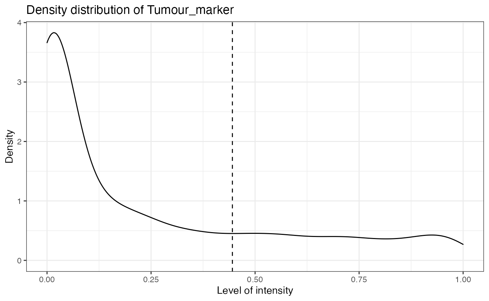
## [1] "Immune_marker1"
## [1] "For Immune_marker1:"
## [1] "TP:1146 TN:3620 FP:185 FN:0"
## [1] "Immune_marker1 threshold intensity: 0.116980867970434"## [1] "Immune_marker2"
## [1] "For Immune_marker2:"
## [1] "TP:968 TN:3823 FP:160 FN:0"
## [1] "Immune_marker2 threshold intensity: 0.124283809517202"
## [1] "Immune_marker3"
## [1] "For Immune_marker3:"
## [1] "TP:178 TN:4028 FP:745 FN:0"
## [1] "Immune_marker3 threshold intensity: 0.0166413130263845"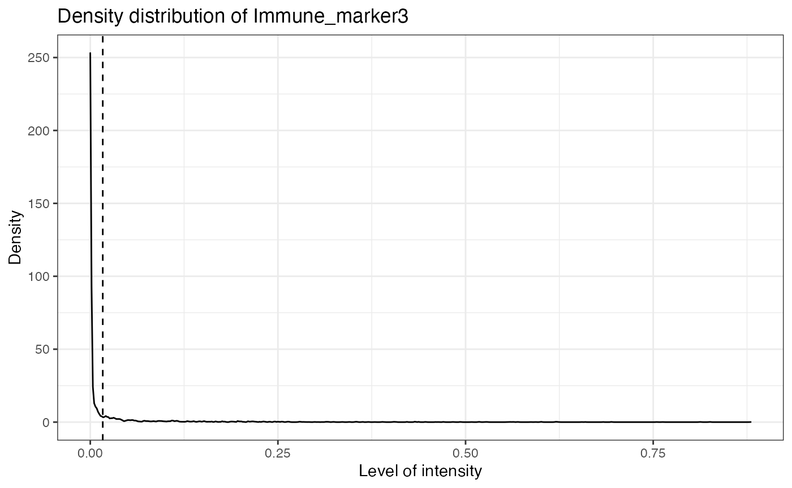
## [1] "Immune_marker4"
## [1] "For Immune_marker4:"
## [1] "TP:630 TN:4301 FP:20 FN:0"
## [1] "Immune_marker4 threshold intensity: 0.00989731350898589"
We can use marker_prediction_plot to plot the predicted cell phenotypes and the ones obtained using HALO or InForm, for comparison.
marker_prediction_plot(predicted_image, marker="Immune_marker1")## Warning: `guides(<scale> = FALSE)` is deprecated. Please use `guides(<scale> = "none")` instead.
## `guides(<scale> = FALSE)` is deprecated. Please use `guides(<scale> = "none")` instead.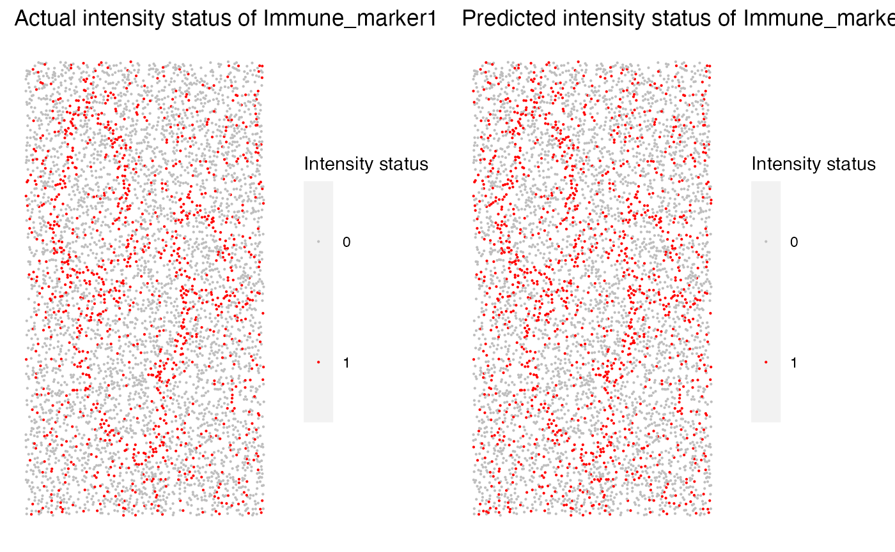
The plot shows Immune_marker1+ cells in the tissue. On the left are the Immune_marker1+ cells defined by InForm and on the right are the Immune_marker1+ cells predicted using SPIAT.
Similar plots are generated for other markers. For example, the following plots are for Tumour_marker.
marker_prediction_plot(predicted_image, marker="Tumour_marker")## Warning: `guides(<scale> = FALSE)` is deprecated. Please use `guides(<scale> = "none")` instead.
## `guides(<scale> = FALSE)` is deprecated. Please use `guides(<scale> = "none")` instead.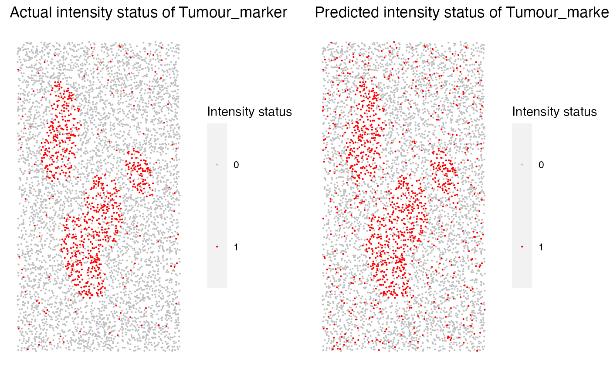 Use the predicted phenotypes to replace the original ones.
predicted_image2 <- predict_phenotypes(sce_object = simulated_image,
thresholds = NULL,
tumour_marker = "Tumour_marker",
baseline_markers = c("Immune_marker1", "Immune_marker2", "Immune_marker3", "Immune_marker4"),
reference_phenotypes = FALSE)## [1] "Tumour_marker threshold intensity: 0.445450443784465"
## [1] "Immune_marker1 threshold intensity: 0.116980867970434"## [1] "Immune_marker2 threshold intensity: 0.124283809517202"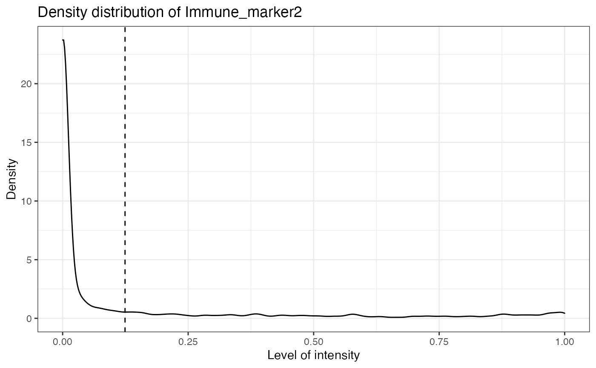
## [1] "Immune_marker3 threshold intensity: 0.0166413130263845"## [1] "Immune_marker4 threshold intensity: 0.00989731350898589"
Define the predicted image and apply tSNE dimensionality reduction plot for the predicted image.
predicted_image2 <- define_celltypes(predicted_image2,
categories = c("Tumour_marker", "Immune_marker1,Immune_marker2", "Immune_marker1,Immune_marker3",
"Immune_marker1,Immune_marker2,Immune_marker4", "OTHER"),
category_colname = "Phenotype",
names = c("Tumour", "Immune1", "Immune2",
"Immune3", "Others"),
new_colname = "Cell.Type")
dimensionality_reduction_plot(predicted_image2, plot_type = "TSNE", feature_colname = "Cell.Type")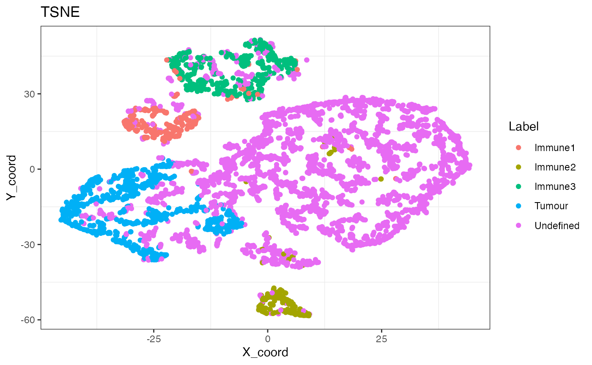
Specifying cell types
Specifying each Phenotype can be tedious if the Phenotype consists of multiple markers. To make it easier, SPIAT define_celltypes can be used to add a column indicating the cell type. By default the column is called Cell.Type. The difference between Phenotype and Cell.Type is that phenotype represents all the markers present on the cell but Cell.Type is the identity of the cell.
formatted_image <- define_celltypes(simulated_image,
categories = c("Tumour_marker", "Immune_marker1,Immune_marker2", "Immune_marker1,Immune_marker3",
"Immune_marker1,Immune_marker2,Immune_marker4", "OTHER"),
category_colname = "Phenotype",
names = c("Tumour", "Immune1", "Immune2",
"Immune3", "Others"),
new_colname = "Cell.Type")Quality control
Boxplots of marker intensity
Incorrect or unreliable phenotyping of cells may also be identified through comparing the marker level for cells labelled positive and negative for a marker. Cells positive for a marker should have high levels of the marker. An unclear separation of marker intensities between positive and negative cells would suggest phenotypes have not been accurately assigned. We can use marker_intensity_boxplot to produce a boxplot for cells phenotyped as being positive or negative for a marker.
marker_intensity_boxplot(formatted_image, "Immune_marker1")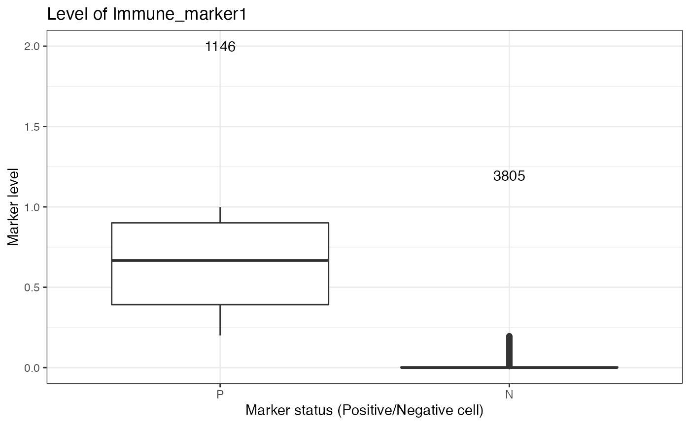
Note that some negative cells will have high marker intensity, and vice versa. This is because HALO and InForm use machine learning to determine positive cells, and not a strict threshold, and also take into account properties such as cell shape, nucleus size etc. .
Scatter plots of marker level
Uneven marker staining or high background intensity can be identified with plot_cell_marker_levels. This produces a scatter plot of the intensity of a marker in each cell. Cells that were not phenotyped as being positive for the particular marker are excluded.
plot_cell_marker_levels(formatted_image, "Immune_marker1")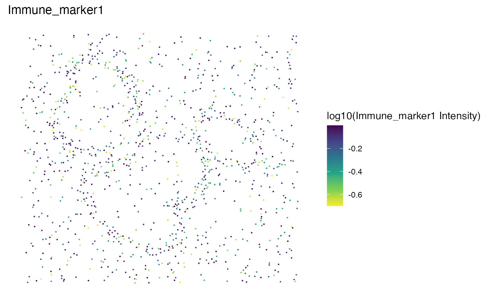
Heatmaps of marker level
For large images, there is also the option of ‘blurring’ the image, where the image is split into multiple small areas, and marker intensities are averaged within each. The image is blurred based on the num_splits parameter.
plot_marker_level_heatmap(formatted_image, num_splits = 100, "Tumour_marker")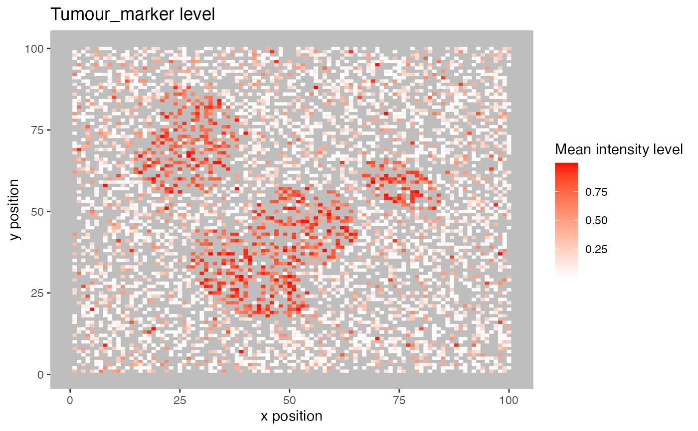 ## Identifying incorrect phenotypes
We may see incorrect phenotypes present in the input data. For example, cells might be incorrectly assigned a phenotype such as “Tumour_marker,Immune_marker1,” both a tumour cell (Tumour_marker) and an immune cell phenotype (Immune_marker1), which is biologically implausible. Incorrect cell phenotypes may be present due to low cell segmentation quality, antibody ‘bleeding’ from one cell to another or inadequate marker thresholding.
We can use marker_permutation to help identify if incorrect cell phenotypes are present. This permutes the marker labels of cells to create a null distribution, and then calculates the empirical p-value of whether an image is enriched or depleted in a particular combination of markers. A low P value for Depletion.p suggests the phenotype is unreliable. However, it is not absolute and it is recommended to review the results.
# permute marker labels of cells
sig <- marker_permutation(formatted_image, num_iter = 100)
# sort by Observed_cell_number
sig.sorted <- sig[order(-sig$Observed_cell_number), ]
# take a look
head(sig.sorted)## Observed_cell_number
## Tumour_marker 819
## Immune_marker1,Immune_marker2,Immune_marker4 630
## Immune_marker1,Immune_marker2 338
## Immune_marker1,Immune_marker3 178
## Immune_marker1 0
## Immune_marker2 0
## Percentage_of_iterations_where_present
## Tumour_marker 100
## Immune_marker1,Immune_marker2,Immune_marker4 100
## Immune_marker1,Immune_marker2 100
## Immune_marker1,Immune_marker3 100
## Immune_marker1 100
## Immune_marker2 100
## Average_bootstrap_cell_number
## Tumour_marker 426.33
## Immune_marker1,Immune_marker2,Immune_marker4 23.36
## Immune_marker1,Immune_marker2 158.45
## Immune_marker1,Immune_marker3 24.48
## Immune_marker1 644.67
## Immune_marker2 521.67
## Enrichment.p Depletion.p
## Tumour_marker 0.01 1.00
## Immune_marker1,Immune_marker2,Immune_marker4 0.01 1.00
## Immune_marker1,Immune_marker2 0.01 1.00
## Immune_marker1,Immune_marker3 0.01 1.00
## Immune_marker1 1.00 0.01
## Immune_marker2 1.00 0.01Removing incorrect phenotypes
If you identify incorrect phenotypes or have any you want to exclude you can do that with select_phenotypes.
data_subset <- select_celltypes(formatted_image, keep=TRUE,
celltypes = c("Tumour_marker","Immune_marker1,Immune_marker3", "Immune_marker1,Immune_marker2",
"Immune_marker1,Immune_marker2,Immune_marker4"),
feature_colname = "Phenotype")
print_feature(data_subset, feature_colname = "Phenotype")## [1] "Immune_marker1,Immune_marker2"
## [2] "Tumour_marker"
## [3] "Immune_marker1,Immune_marker2,Immune_marker4"
## [4] "Immune_marker1,Immune_marker3"In this vignette we will work with all the original phenotypes present in formatted_image.
Cell percentages
We can obtain the number and proportion of each cell type with calculate_cell_proportions. We can use reference_celltypes to specify cell types to use as the reference. For example, “Total” will calculate the proportion of each cell type against all cells. We can exclude any cell types that are not of interest e.g. “Undefined” with celltypes_to_exclude.
p_cells <- calculate_cell_proportions(formatted_image,
reference_celltypes=NULL,
feature_colname ="Cell.Type",
celltypes_to_exclude = "Others",
plot.image = TRUE)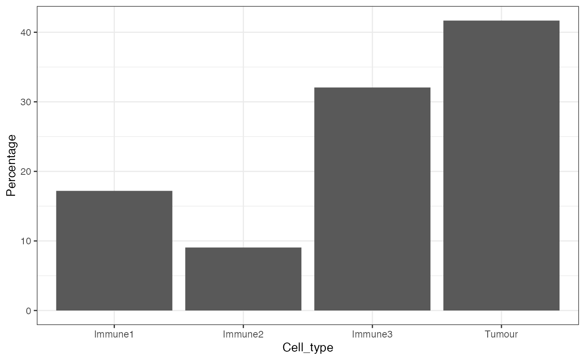
p_cells## Cell_type Number_of_celltype Proportion Percentage Proportion_name
## 5 Tumour 819 0.41679389 41.679389 /Total
## 3 Immune3 630 0.32061069 32.061069 /Total
## 1 Immune1 338 0.17201018 17.201018 /Total
## 2 Immune2 178 0.09058524 9.058524 /TotalTo visualize the cell type proportions as barplots we can use plot_cell_percentages. (This one doesn’t work)
plot_cell_percentages(cell_proportions = p_cells,
cells_to_exclude = "Tumour", cellprop_colname="Proportion_name")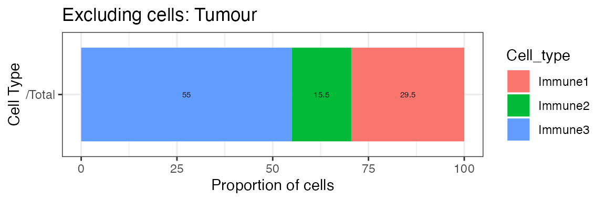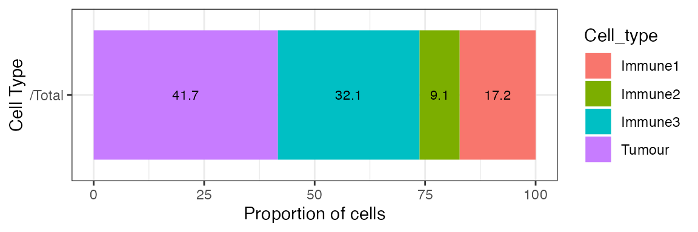
Visualizing tissues
In addition to the marker level tissue plots for QC, SPIAT has other methods for visualizing markers and phenotypes in tissues.
3D surface plot
We can visualize a selected marker in 3D with marker_surface_plot. The image is blurred based on the num_splits parameter.
marker_surface_plot(formatted_image, num_splits=15, marker="Immune_marker1")3D stacked surface plot
To visualize multiple markers in 3D in a single plot we can use marker_surface_plot_stack. This shows normalized intensity level of specified markers and enables the identification of co-occurring and mutually exclusive markers.
marker_surface_plot_stack(formatted_image, num_splits=15, markers=c("Tumour_marker", "Immune_marker1"))The stacked surface plots of the Tumour_marker (tumour cell) and Immune_marker1 (T cell) markers in this prostate tissue shows how Tumour_marker and Immune_marker1 are mutually exclusive as the peaks and valleys are opposite.
Categorical dot plot
We can see the location of all cell types (or any column in the data) in the tissue with plot_cell_basic. Each dot in the plot corresponds to a cell and cells are coloured by cell type. Any cell types present in the data but not in the cell types of interest will be put in the category “OTHER” and coloured lightgrey.
my_colors <- c("red", "blue", "darkcyan", "darkgreen")
plot_cell_categories(formatted_image, c("Tumour", "Immune1", "Immune2", "Immune3"),
my_colors, "Cell.Type")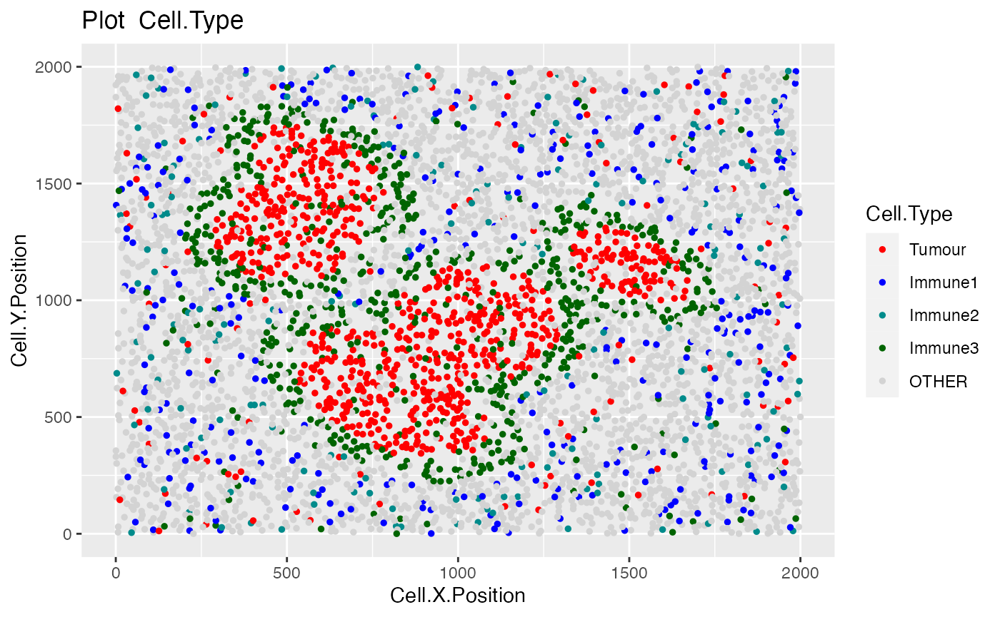
Cell distances
We can calculate the distances between two cell types (cell type A and cell type B) by identifying the closest cell of cell type B to each of the cells of cell type A with calculate_distances_between_cell_types.
distances <- calculate_distances_between_cell_types(formatted_image,
cell_types_of_interest = c("Tumour", "Immune3"),
feature_colname = "Cell.Type")This creates a distribution of minimum distances between phenotypes A and B, which can be visualized as a violin plot with plot_cell_distances_violin. Visualization of this distribution often reveals whether pairs of cells are evenly spaced across the image, or whether there are clusters of pairs of phenotypes.
plot_cell_distances_violin(distances)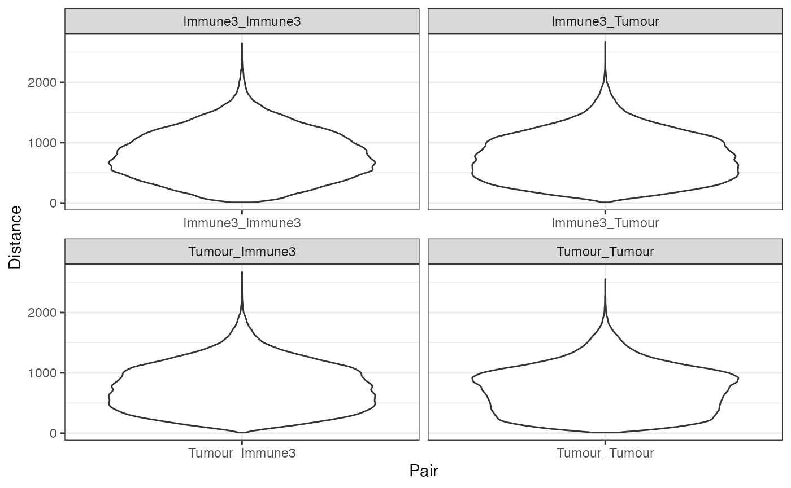
From this plot we can see that T_helper cells seem to be more closely interacting with each other, as there are shorter distances between those cells, than between T_cyto cells or between T_helper and T_cyto cells.
We can also calculate summary statistics for the distances between each combination of cell types, the mean, median and standard deviation, with calculate_summary_distances_between_cell_types.
summary_distances <- calculate_summary_distances_between_cell_types(formatted_image,
all_combinations = TRUE,
feature_colname = "Cell.Type")## [1] "All markers are used in pair-wise distance calculation: "
## [1] "Others" "Immune1" "Tumour" "Immune3" "Immune2"These cell distances can then be visualized as a heatmap with plot_distance_heatmap.
plot_distance_heatmap(summary_distances)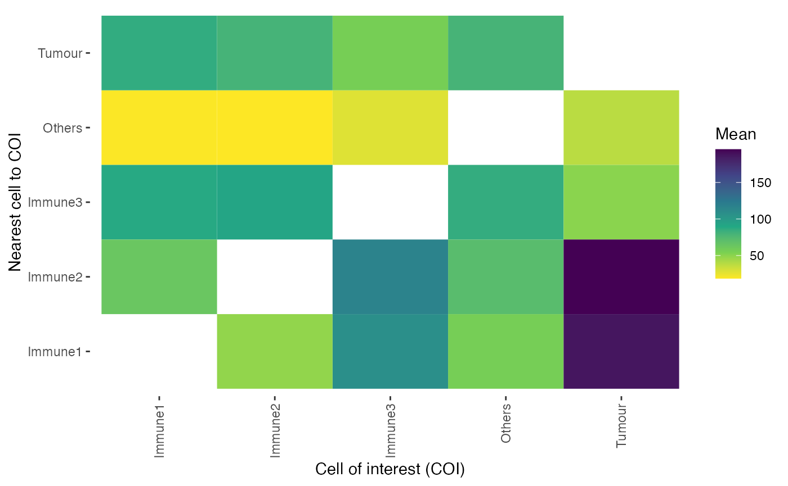
This plot shows that Tumour cells are interacting most closely with Immune3 cells.
Cell colocalisation
With SPIAT we can quantify how much two cell types are mixing, and thus potentially interacting, through a variety of ways.
Cells within radius
To determine whether two cell types are interacting with another, or if there is repulsion between them, SPIAT uses the concept of gradients. The assumption is that, if marker A intensity is high close to cells of marker B, and this value decreases as the distance from B increases, it suggests the cells are close and interacting. Conversely, if we see that marker A intensity is low when close to cells of marker B but increases with distance, it suggests there is repulsion between the two cell types.
plot_average_intensity calculates the average intensity of a target marker for a number of user-supplied radii values. It plots the intensity level at each specified radius as a line graph. The radius unit is pixels.
plot_average_intensity(formatted_image, reference_marker="Immune_marker3", target_marker="Immune_marker2", c(30, 35, 40, 45, 50, 75, 100))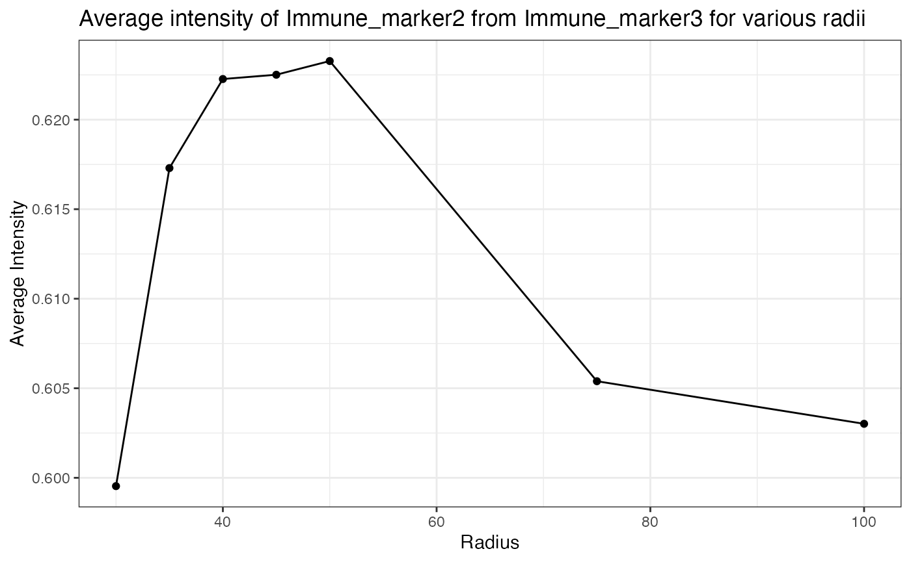
This plot shows that high levels of Immune_marker3 were observed in cells near Immune_marker2 cells and these levels decreased at larger radii. This suggests Immune_marker2 and Immune_marker3 cells may be closely interacting in this tissue.
We can use average_marker_intensity_within_radius to calculate the average intensity of the target_marker within a radius from the cells positive for the reference marker. Note that it pools all cells with the target marker that are within the specific radius of any reference cell. Results represent the average intensities within a radius, but do not correspond to metrics for each cell. This function can also be used to help identify radii values for plot_average_intensity.
average_marker_intensity_within_radius(formatted_image,
reference_marker ="Immune_marker3",
target_marker = "Immune_marker2",
radius=30)## [1] 0.5995357We can calculate the average percentage of cells of one cell type (target) within a radius of another cell type (reference).
average_percentage_of_cells_within_radius(formatted_image,
reference_celltype = "Immune1",
target_celltype = "Immune2",
radius=100, feature_colname="Cell.Type")## [1] 4.768123Average minimum distance (AMD)
Distance-based metrics can also indicate the relationship between two cell types. AMD calculates the average minimum distance between two cell types.
min_d_df <- calculate_minimum_distances_between_cell_types(
formatted_image,
feature_colname = "Cell.Type",
all_combinations = FALSE,
cell_types_of_interest = c("Tumour","Immune1")
)## [1] "Markers had been selected in pair-wise distance calculation: "
## [1] "Immune1" "Tumour"
min_d_df$Mean## [1] 85.84773 187.52474Average pairwise distance (APD)
APD calculates the average pairwise distance between two cell types.
d_df <- calculate_summary_distances_between_cell_types(
formatted_image,
feature_colname = "Cell.Type",
all_combinations = FALSE,
cell_types_of_interest = c("Tumour","Immune1")
)## [1] "Markers had been selected in pair-wise distance calculation: "
## [1] "Immune1" "Tumour"
d_df$Mean## [1] 85.84773 187.52474(Normalised) mixing score
This score was originally defined as the number of immune-tumor interactions divided by the number of immune-immune interactions (Keren et al. 2018). SPIAT generalizes this method to allow calculation of any two cell types. mixing_score_summary returns the mixing score between a reference cell type and a target cell type. This mixing score is defined as the number of target-reference interactions/number of reference-reference interactions within a specified radius. The higher the score the greater the mixing of the two cell types. The normalised score is normalised for the number of target and reference cells in the image.
mixing_score_summary(formatted_image, reference_celltype = "Immune1",
target_celltype = "Immune2", radius=100, feature_colname ="Cell.Type")## Reference Target Number_of_reference_cells Number_of_target_cells
## 2 Immune1 Immune2 338 178
## Reference_target_interaction Reference_reference_interaction Mixing_score
## 2 583 1184 0.4923986
## Normalised_mixing_score
## 2 1.864476Cross K function
Cross K function is similar to mixing score, but calculates the score across all possible distances. It also compares the behaviour of the image with an image that has randomly distributed points of the same number. There are 4 patterns that can be distinguished from K-cross function, as illustrated in the plots below (generated here).

Here, the black line represents our image, the red line represents a randomly distibuted point pattern.
- 1st plot: The red line and black line are close to each other, it means the two types of points are randomly independently distributed.
- 2nd plot: The red line is under the black line, and in the middle the difference is dramatic, it means the points are mixed and split into clusters.
- 3rd plot: With the increase of radius, the black line diverges further from the red line, it means that there is one mixed cluster of two types of points.
- 4th plot: The red line is above the black line, it means that the two types of points form separated clusters.
We can calculate the cross K-function using SPIAT.
df_cross <- calculate_cross_functions(formatted_image, method = "Kcross",
cell_types_of_interest = c("Tumour","Immune3"),
feature_colname ="Cell.Type",
dist = 100)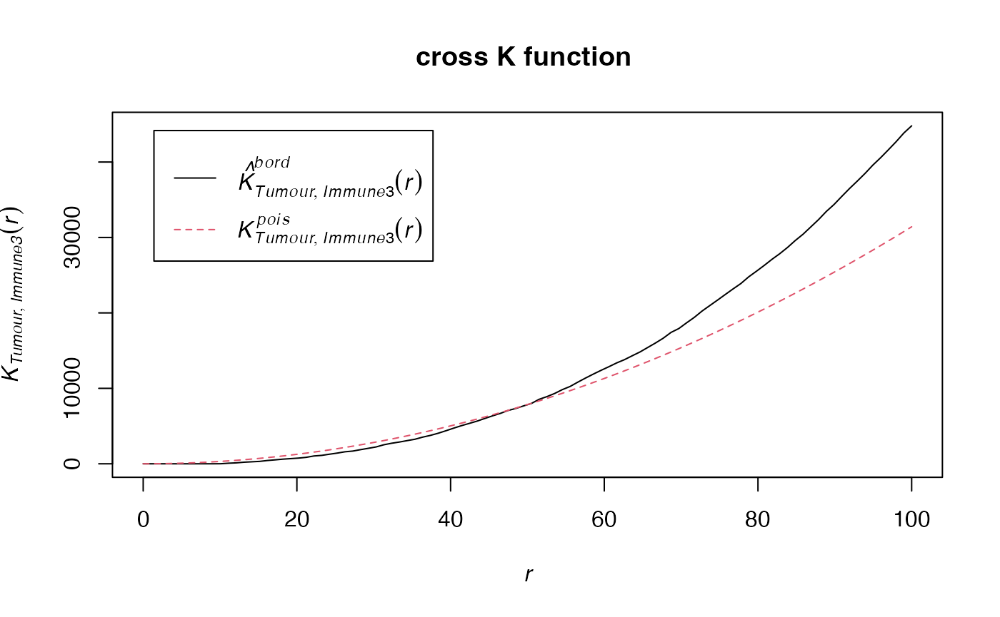 There is another pattern in cross K curve which is not identified previously, that is when there is a “ring” of one cell type surrounding the area of another cell type. For this pattern, the observed and expected curves in cross K function has a crossing. We observed crossing in many example images where rings exist. However, crossing is not exclusively present in ring images. When separate clusters of two cell types are very close, the crossing can also happen at a low distance. In images with infiltration, crossing may also happen at an extremely low distance due to randomness. To use crossing as a metric indicating the ring pattern, we need to choose a reasonable distance for cross K function (generally a quarter to half of image size, but should also consider the cluster size), and filter out the extremely low crossing distance.
crossing_of_crossK(df_cross)## [1] "Crossing of cross K function is detected for this image, indicating a potential immune ring."
## [1] "The crossing happens at the 50 % of the specified distance."## [1] 0.5The result shows that the crossing happens at 50% of the specified distance (100) of the cross K function, which is very close to the edge of the tumour cluster. This means that the crossing is not due to the randomness in cell distribution, nor due to two close located immune and tumour clusters. This result aligns with the observation that there is an immune ring surrounding the tumour cluster.
We can calculate the area under the curve (AUC) of the cross K-function. This tells us the two types of cells are:
- separate clusters - the more negative it is
- independent/immune ring - the closer it is to zero
- mixed - the more positive it is
AUC_of_cross_function(df_cross)## [1] 0.07372797The AUC score is close to zero so this tells us that the two types of cells either do not have a relationship or they form a ring surrounding a cluster.
Localised entropy and spatial heterogeneity
Entropy
We can calculate the entropy of the cells.
calculate_entropy(formatted_image, cell_types_of_interest = c("Immune1","Immune2"),
feature_colname = "Cell.Type")## [1] 0.9294873However, the entropy of one image does not provide us spatial information of the image. We propose the concept of localised entropy, which is calculating an entropy score for a predefined local region. There are two ways to calculate localised entropy. First is a “fish net” approach where the image is split into grid squares and for each square an entropy score is calculated. The other one is a gradient approach where an increasing circle of each reference cell is drawn and a score is calculated for cells within each circle.
Please note that the localised metrics do not only include entropy. Other numeric metrics can also be calculated this way.
Fish net grid - spatial heterogeneity
One approach to calculate localised metric is to split the image into “fish-net” grid squares. For each grid square, grid_metrics calculate the metric for that square and visualise the raster image. Users can choose any metric as the localised metric. Here we use entropy as an example.
grid <- grid_metrics(defined_image, FUN = calculate_entropy, n_split = 20,
cell_types_of_interest=c("Tumour","Immune3"),
feature_colname = "Cell.Type")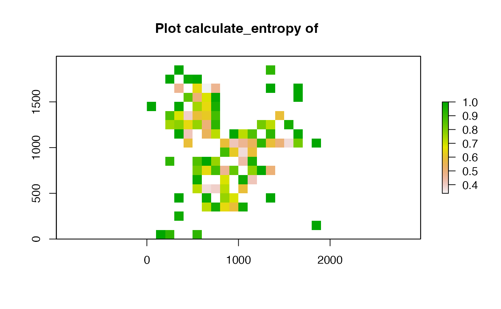 After calculating the localised entropy, we can apply metrics like percentages of grid squares with patterns (prevalence) and moran’s I (distinctiveness).
calculate_percentage_of_grids(grid, threshold = 0.75, above = TRUE)## [1] 13
calculate_spatial_autocorrelaiton(grid, metric = "globalmoran")## [1] 0.09446964The selection of threshold depends on the pattern and metric the user chooses to find the localised pattern. We chose 0.75 for entropy because 0.75 is roughly the entropy of two cell types when their ratio is 1:5 or 5:1.
Gradients
We can use the gradient function to calculate metrics (entropy, mixing score, percentage of cells within radius, marker intensity) for a range of radii. We specify the metric we want to calculate with FUN=. Specifically, we integragted the use of entropy as the metric for graident computation into another function - entropy_gradient_aggregated.
gradient_pos <- seq(50, 500, 50)
gradient_results <- entropy_gradient_aggregated(SPIAT::defined_image, cell_types_of_interest = c("Immune3","Tumour"),
feature_colname = "Cell.Type", radii = gradient_pos)
# plot the results
plot(1:10,gradient_results$gradient_df[1, 3:12])Tissue structures
If the image contains tumour, it may be a clear tumour structure or unclear (dispersed). The function average_nearest_neighbor_index can inform us whether there is a clear tumour structure (clustered) or unclear (dispersed), along with a P value for the estimate.
average_nearest_neighbor_index(formatted_image, reference_cell="Tumour",
feature_colname="Cell.Type", p.val = 5e-6)## $pattern
## [1] "Clustered"
##
## $`p-value`
## [1] 7.11006e-32When there is a clear tumour region in the image, we define four tumour structures: “Inside,” “Outside,” “Infiltration front” and “Invasive front,” as shown in the figure below. Why are we interested in defining such structure? For some types of cancer, there can be small clusters of tumour cells, like globes. We may be interested in not only whether immune cells infiltrate into the whole tumour region but also whether the immune cells infiltrate into the small globes. The identification of the tumour structure can be achieved by calculating the distance from each cell to the tumour boundary, after the identification of bordering cells.
Another way to determine if there is a clear tumour clsuter is using the ratio of tumour bordering cells to tumour total cells. The bordering cells are found by the SPIAT function to be introduced later. If this ratio is high, it means there are too many bordering cells, indicating a not clear tumour cells. And vice versa.
R_BT(formatted_image, cell_type_of_interest = "Tumour", "Cell.Type")## [1] 0.2014652The result is 0.2014652. It is a low value which means there are relatively low number of bordering cells compared to total tumour cells. This means the image has clear tumour clusters.

We can identify borders with identify_bordering_cells. This uses the alpha hull method (Pateiro-Lopez, Rodriguez-Casal, and. 2019) via the hull2spatial package. Here we use tumour cells (Tumour_marker) as the reference to identify the bordering cells but any cell type can be used.
formatted_border <- identify_bordering_cells(formatted_image,
reference_cell = "Tumour",
feature_colname="Cell.Type")## [1] "The alpha of Polygon is: 63.24375"We then calculate the distance of each cell to the borders.
formatted_distance <- calculate_distance_to_tumour_margin(formatted_border)## [1] "Markers had been selected in pair-wise distance calculation: "
## [1] "Non-border" "Border"We define the area within a 5-cell distance to the boundary as “infiltration front” (inside) and “invasive front” (outside). The areas located more than a 5 cell-distance away from the boundary are defined as “in” (inside) and “out” (outside).
names_of_immune_cells <- c("Immune1", "Immune2","Immune3")
formatted_structure <- define_structure(formatted_distance,
names_of_immune_cells = names_of_immune_cells,
feature_colname = "Cell.Type",
n_margin_layers = 5)## [1] "How many layers of cells in the external/internal margin: 5"
## [1] "The width of internal/external margin: 85.0668034976435"
categories <- print_feature(formatted_structure, "Structure")## [1] "Outside" "Stromal.immune" "Internal.margin"
## [4] "Border" "External.margin.immune" "Internal.margin.immune"
## [7] "External.margin" "Inside" "Infiltrated.immune"We can plot and colour these structure categories.
plot_cell_categories(formatted_structure, feature_colname = "Structure")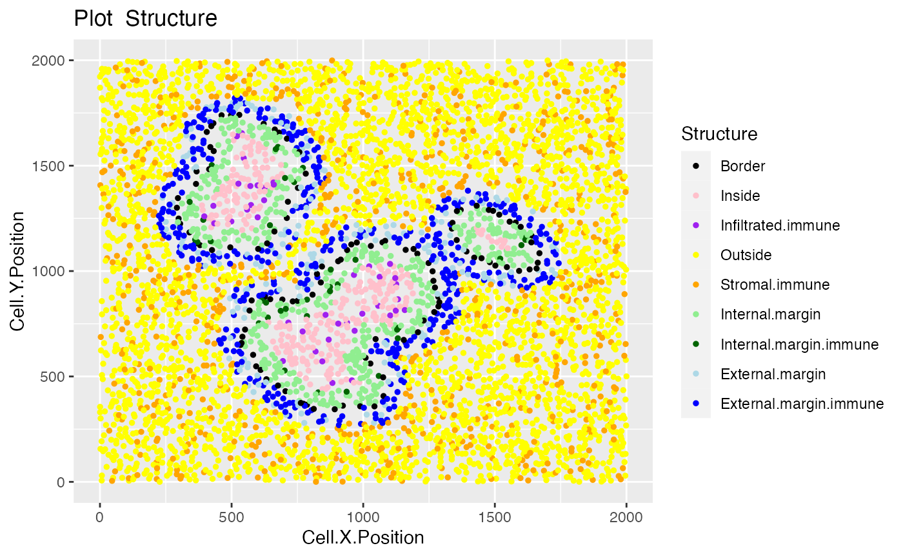
We can calculate the proportion of immune cells in the tumour structure.
immune_proportions <- calculate_proportions_of_cells_in_structure(formatted_structure, cell_types_of_interest = names_of_immune_cells, feature_colname ="Cell.Type")
immune_proportions## Cell.Type Relative_to
## 1 Immune1 All_cells_in_the_structure
## 2 Immune2 All_cells_in_the_structure
## 3 Immune3 All_cells_in_the_structure
## 4 Immune1 All_cells_of_interest_in_the_structure
## 5 Immune2 All_cells_of_interest_in_the_structure
## 6 Immune3 All_cells_of_interest_in_the_structure
## 7 Immune1 The_same_cell_type_in_the_whole_image
## 8 Immune2 The_same_cell_type_in_the_whole_image
## 9 Immune3 The_same_cell_type_in_the_whole_image
## 10 All_cells_of_interest All_cells_in_the_structure
## P.Infiltrated.Immune P.Internal.Margin.Immune P.External.Margin.Immune
## 1 0.00000000 0.00000000 0.005494505
## 2 0.00000000 0.00000000 0.005494505
## 3 0.14385965 0.08780488 2.159340659
## 4 0.00000000 0.00000000 0.002531646
## 5 0.00000000 0.00000000 0.002531646
## 6 1.00000000 1.00000000 0.994936709
## 7 0.00000000 0.00000000 0.002958580
## 8 0.00000000 0.00000000 0.005617978
## 9 0.06507937 0.05714286 0.623809524
## 10 0.14385965 0.08780488 2.170329670
## P.Stromal.Immune
## 1 0.11971581
## 2 0.06287744
## 3 0.05683837
## 4 0.50000000
## 5 0.26261128
## 6 0.23738872
## 7 0.99704142
## 8 0.99438202
## 9 0.25396825
## 10 0.23943162We can calculate summaries of the distances for immune cells in the tumour structure.
immune_distances <- calculate_summary_distances_of_cells_to_borders(formatted_structure, cell_types_of_interest = names_of_immune_cells, "Cell.Type")## Warning in min(data_of_interest_in$Distance.To.Border): no non-missing arguments
## to min; returning Inf## Warning in max(data_of_interest_in$Distance.To.Border): no non-missing arguments
## to max; returning -Inf## Warning in min(data_of_interest_in$Distance.To.Border): no non-missing arguments
## to min; returning Inf## Warning in max(data_of_interest_in$Distance.To.Border): no non-missing arguments
## to max; returning -Inf
immune_distances## Cell.Type Area Min_d Max_d Mean_d Median_d
## 1 All_cell_types_of_interest Tumor_area 10.93225 192.4094 86.20042 88.23299
## 2 All_cell_types_of_interest Stroma 10.02387 984.0509 218.11106 133.18220
## 3 Immune1 Tumor_area Inf -Inf NaN NA
## 4 Immune1 Stroma 84.20018 970.7749 346.14096 301.01535
## 5 Immune2 Tumor_area Inf -Inf NaN NA
## 6 Immune2 Stroma 79.42753 984.0509 333.26374 284.09062
## 7 Immune3 Tumor_area 10.93225 192.4094 86.20042 88.23299
## 8 Immune3 Stroma 10.02387 971.5638 102.79227 68.19218
## St.dev_d
## 1 45.27414
## 2 199.87586
## 3 NA
## 4 187.04247
## 5 NA
## 6 185.67518
## 7 45.27414
## 8 131.32714Clusters and communities
The image image_no_markers is simulated from package spaSim. This image contains “Tumour,” “Immune,” “Immune1” and “Immune2” cells without marker intensities.
data("image_no_markers")
plot_cell_categories(image_no_markers, c("Tumour", "Immune","Immune1","Immune2","Others"),
c("red","blue","darkgreen", "brown","lightgray"),"Cell.Type")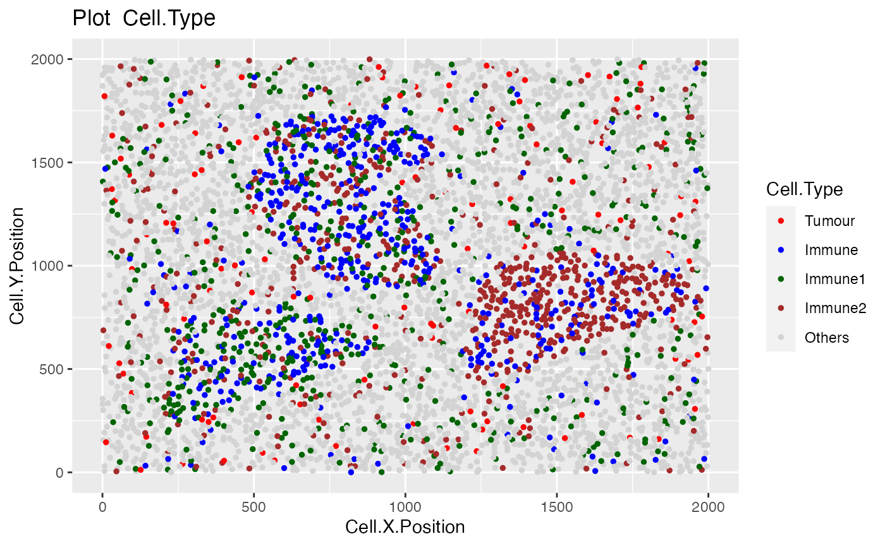
We can determine if there are aggregates (or a lack of aggregates) of a particular phenotype or combination of cell types. SPIAT can be used to identify two types of cell aggregates, clusters and communities.
Clusters are cell aggregates composed of non-tumour cells, often by immune cells. For the detection of clusters, identify_cell_clusters only considers cell types of interest defined by the user. Euclidean distances between cells are calculated, and pairs of cells with a distance less than a threshold are considered to be ‘interacting,’ with the rest being ‘non-interacting.’ Hierarchical clustering is then used to separate the clusters. We need to specify a radius. The radius corresponds to how lenient we are in defining clusters. A bigger radius would mean we are more likely to merge individual clusters. The radius is chosen based on what looks ‘reasonable.’ Cells not assigned to clusters (“free” cells) are assigned to Cluster_NA in the output table. The argument min_neighborhood_size specifies the threshold of a neighborhood size to be considered as a neighborhood. Other clustering methods include dbscan and Rphenograph.
clusters <- identify_neighborhoods(image_no_markers,
method = "hierarchical",
min_neighborhood_size = 100,
cell_types_of_interest = c("Immune", "Immune1", "Immune2"),
radius = 50, feature_colname = "Cell.Type")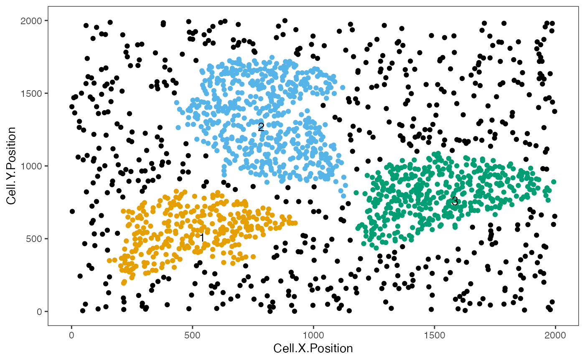
This plot shows clusters of Immune, Immune1 and Immune2 cells. Each number and colour corresponds to a distinct cluster. Black cells correspond to ‘free,’ un-clustered cells.
Users are recommended to test out different radius and then visualize the clustering results. But SPIAT also has average_minimum_distance, which calculates the average minimum distance between all cells in an image, and can be used as a starting point.
average_minimum_distance(formatted_image)## [1] 17.01336We can visualize the cell composition of neighborhoods. This allows us to determine whether there are regions where cells of different types are interacting, or whether there is little mixing between celltypes. To do this, we can use composition_of_neighborhoods to obtain the percentages of cells with a specific marker within each neighborhood and the number of cells in the neighborhood.
neighorhoods_vis <- composition_of_neighborhoods(clusters, feature_colname = "Cell.Type")
neighorhoods_vis <- neighorhoods_vis[neighorhoods_vis$Total_number_of_cells >=5,]Then we can use plot_composition_heatmap to produce a heatmap showing the marker percentages within each cluster.
plot_composition_heatmap(neighorhoods_vis, feature_colname="Cell.Type")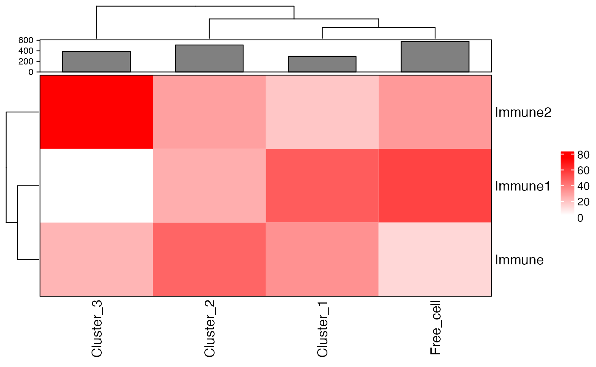
This plot shows that Cluster_1 and CLuster_2 contain all three types of immune cells. Cluster_3 does not have Immune1. Cluster_1 and Cluster_2 are more similar to the free cells in their composition.
Reproducibility
## R version 4.1.2 (2021-11-01)
## Platform: x86_64-apple-darwin17.0 (64-bit)
## Running under: macOS Big Sur 10.16
##
## Matrix products: default
## BLAS: /Library/Frameworks/R.framework/Versions/4.1/Resources/lib/libRblas.0.dylib
## LAPACK: /Library/Frameworks/R.framework/Versions/4.1/Resources/lib/libRlapack.dylib
##
## locale:
## [1] en_AU.UTF-8/en_AU.UTF-8/en_AU.UTF-8/C/en_AU.UTF-8/en_AU.UTF-8
##
## attached base packages:
## [1] stats4 stats graphics grDevices utils datasets methods
## [8] base
##
## other attached packages:
## [1] SPIAT_0.99.0 SingleCellExperiment_1.16.0
## [3] SummarizedExperiment_1.24.0 Biobase_2.54.0
## [5] GenomicRanges_1.46.1 GenomeInfoDb_1.30.1
## [7] IRanges_2.28.0 S4Vectors_0.32.3
## [9] BiocGenerics_0.40.0 MatrixGenerics_1.6.0
## [11] matrixStats_0.61.0 BiocStyle_2.22.0
##
## loaded via a namespace (and not attached):
## [1] circlize_0.4.14 systemfonts_1.0.4 plyr_1.8.6
## [4] lazyeval_0.2.2 sp_1.4-6 splines_4.1.2
## [7] crosstalk_1.2.0 ggplot2_3.3.5 elsa_1.1-28
## [10] digest_0.6.29 foreach_1.5.2 htmltools_0.5.2
## [13] fansi_1.0.2 magrittr_2.0.2 memoise_2.0.1
## [16] cluster_2.1.2 tensor_1.5 doParallel_1.0.17
## [19] tzdb_0.2.0 tripack_1.3-9.1 ComplexHeatmap_2.10.0
## [22] R.utils_2.11.0 vroom_1.5.7 pkgdown_2.0.2
## [25] spatstat.sparse_2.1-0 colorspace_2.0-3 ggrepel_0.9.1
## [28] textshaping_0.3.6 xfun_0.30 dplyr_1.0.8
## [31] rgdal_1.5-28 crayon_1.5.0 RCurl_1.98-1.6
## [34] jsonlite_1.8.0 spatstat_2.3-3 spatstat.data_2.1-2
## [37] iterators_1.0.14 glue_1.6.2 polyclip_1.10-0
## [40] gtable_0.3.0 zlibbioc_1.40.0 XVector_0.34.0
## [43] GetoptLong_1.0.5 DelayedArray_0.20.0 shape_1.4.6
## [46] apcluster_1.4.9 abind_1.4-5 scales_1.1.1
## [49] sgeostat_1.0-27 pheatmap_1.0.12 spatstat.random_2.1-0
## [52] Rcpp_1.0.8 viridisLite_0.4.0 clue_0.3-60
## [55] spatstat.core_2.4-0 bit_4.0.4 dittoSeq_1.6.0
## [58] htmlwidgets_1.5.4 httr_1.4.2 RColorBrewer_1.1-2
## [61] ellipsis_0.3.2 pkgconfig_2.0.3 R.methodsS3_1.8.1
## [64] farver_2.1.0 sass_0.4.0 deldir_1.0-6
## [67] alphahull_2.2 utf8_1.2.2 tidyselect_1.1.2
## [70] labeling_0.4.2 rlang_1.0.2 reshape2_1.4.4
## [73] munsell_0.5.0 tools_4.1.2 cachem_1.0.6
## [76] cli_3.2.0 dbscan_1.1-10 generics_0.1.2
## [79] splancs_2.01-42 mmand_1.6.1 ggridges_0.5.3
## [82] evaluate_0.15 stringr_1.4.0 fastmap_1.1.0
## [85] yaml_2.3.5 ragg_1.2.2 goftest_1.2-3
## [88] knitr_1.37 bit64_4.0.5 fs_1.5.2
## [91] purrr_0.3.4 RANN_2.6.1 nlme_3.1-153
## [94] R.oo_1.24.0 pracma_2.3.8 compiler_4.1.2
## [97] rstudioapi_0.13 plotly_4.10.0 png_0.1-7
## [100] spatstat.utils_2.3-0 spatstat.linnet_2.3-2 tibble_3.1.6
## [103] bslib_0.3.1 stringi_1.7.6 highr_0.9
## [106] desc_1.4.1 lattice_0.20-45 Matrix_1.3-4
## [109] vctrs_0.3.8 pillar_1.7.0 lifecycle_1.0.1
## [112] BiocManager_1.30.16 GlobalOptions_0.1.2 spatstat.geom_2.3-2
## [115] jquerylib_0.1.4 data.table_1.14.2 cowplot_1.1.1
## [118] bitops_1.0-7 raster_3.5-15 R6_2.5.1
## [121] bookdown_0.24 gridExtra_2.3 codetools_0.2-18
## [124] gtools_3.9.2 rjson_0.2.21 rprojroot_2.0.2
## [127] GenomeInfoDbData_1.2.7 mgcv_1.8-38 parallel_4.1.2
## [130] terra_1.5-21 grid_4.1.2 rpart_4.1-15
## [133] tidyr_1.2.0 rmarkdown_2.12 Rtsne_0.15Author Contributions
AT, YF, TY, ML, JZ, VO, MD are authors of the package code. MD and YF wrote the vignette. AT designed the package.